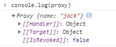
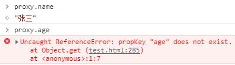
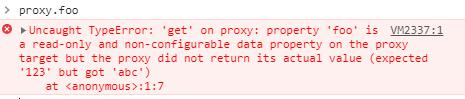
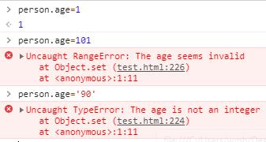

ES6系列-4-Proxy与Reflect
概述
Proxy: 英文意思为：代理，读音为：[ˈprɒksi]。它在目标对象之前架设一层“拦截”，外界对该对象的访问，都必须先通过这层拦截，用于修改某些操作的默认行为，等同于在语言层面做出修改，所以属于一种“元编程”（meta programming），即对编程语言进行编程。
Reflect对象与Proxy对象一样，也是 ES6 为了操作对象而提供的新 API。
我们先看一个例子
var obj = new Proxy({}, {
get(target, key, receiver) {
console.log(`getting ${key}!`);
return Reflect.get(target, key, receiver);
},
set(target, key, value, receiver) {
console.log(`setting ${key}!`);
return Reflect.set(target, key, value, receiver);
}
});
运行下面代码：
obj.name="mike"
//setting name!
obj.name
//getting name!
可以看到ES6重载了点运算符，即用自己的定义覆盖了语言的原始定义。
Proxy 对象
Proxy 构造函数
ES6 原生提供 Proxy 构造函数，用来生成 Proxy 实例。
var proxy = new Proxy(target, handler);
- target参数表示所要拦截的目标对象
- handler参数也是一个对象，用来定制拦截行为
我们在target对象上设置一层拦截：
var target = {};
var handler = {
get(target, property){
return 'Li'
},
};
var proxy = new Proxy(target, handler);
当修改target对象时
target.name="jack";
可以看到proxy其实是接收到变化了

但当我们访问proxy下属性时，返回的依旧是Li:
proxy.name //'Li'
直接设置proxy.name,proxy返回的依旧是Li,target变为了tom:
proxy.name="tom"
proxy.name //'Li'
target.name //"tom"
这很好理解，所有访问操作都会经过代理再处理一层，所以返回的永远是 Li
Proxy 实例
Proxy 实例也可以作为其他对象的原型对象（沿用上述例子）。
var target = {};
var handler = {
get(target, property){
return 'Li'
},
};
var proxy = new Proxy(target, handler);
var obj = Object.creat(proxy)
console.log(obj.time);// 'Li'
Proxy 实例方法
get()
get方法用于拦截某个属性的读取操作，可以接受三个参数：
get(target,propKey[,receiver])
- target: 目标对象
- propKey: 属性名
- receiver: proxy 实例本身,严格地说，是操作行为所针对的对象，可选
拦截读取
const person = {
name: "张三"
};
const proxy = new Proxy(person, {
get: function(target, propKey) {
if (propKey in target) {
return target[propKey];
} else {
throw new ReferenceError("propKey \"" + propKey + "\" does not exist.");
}
}
});
运行结果：

拦截继承
const Obj=new Proxy({}, {
get: function(target, propKey, receiver) {
console.log("GET "+propKey)
console.log(receiver)
return target[propKey];
}
});
const p1=Object.create(Obj)
运行结果：
p1.name // GET name
receiver 参数
const proxy = new Proxy({}, {
get: function(target, propKey, receiver) {
return receiver;
}
});
const b=Object.create(proxy)
proxy.getReceiver === proxy;// true
b.a===b.c; //true
b.a===b; //true
b对象本身没有a属性，所以读取b.a的时候，会去d的原型proxy对象找。这时，receiver就指向b，代表原始的读操作所在的那个对象。
不可写配置且不可写属性的拦截
const target = Object.defineProperties({}, {
foo: {
value: 123,
writable: false,
configurable: false
},
});
const proxy = new Proxy(target, {
get(target, propKey) {
return 'abc';
}
});
此时，访问proxy.foo会报错

这种情况下只能返回原属性本身：
const proxy = new Proxy(target, {
get(target, propKey) {
return target[propKey]
}
});
set()
set方法用来拦截某个属性的赋值操作，可以接受四个参数：
set(target, propKey, value, receiver)
- target: 目标对象
- propKey: 属性名
- value: 属性值
- receiver: proxy 实例本身,严格地说，是操作行为所针对的对象，可选
数据校验
const validator={
set(target,propKey,value){
if(propKey==="age"){
if(!Number.isInteger(value)){
throw new TypeError('The age is not an integer');
}else if(value>100){
throw new RangeError('The age seems invalid');
}
}
target[propKey]=value
}
}
const person=new Proxy({},validator)
运行结果：

这是数据验证的一种实现方法。利用set方法，还可以数据绑定，即每当对象发生变化时，会自动更新 DOM（Vue 3.x的版本采用此方法）
receiver 参数
const handler = {
set: function(obj, prop, value, receiver) {
obj[prop] = receiver;
}
};
const proxy = new Proxy({}, handler);
const b = {};
Object.setPrototypeOf(b, proxy);
//Object.setPrototypeOf 将一个指定的对象的原型设置为另一个对象
// 等同于 const b = Object.create(proxy)
运行结果：
b.a ===b; //false
b.a = 'bar';//"bar"
b.a ===b; //true
设置b.a属性的值时，b并没有a属性，因此引擎会到b的原型链去找a属性。b的原型对象proxy是一个 Proxy 实例，设置它的a属性会触发set方法。这时，第四个参数receiver就指向原始赋值行为所在的对象b
不可写配置且不可写属性的拦截
const obj = {};
Object.defineProperty(obj, 'foo', {
value: 'bar',
writable: false,
});
const handler = {
set: function(obj, prop, value, receiver) {
obj[prop] = 'baz';
}
};
const proxy = new Proxy(obj, handler);
运行结果：
proxy.foo = 'baz';
proxy.foo // "bar"
obj.foo属性不可写，所以代理不生效，并且不会报错
注意，严格模式下，set代理必须返回true，否则就会报错。
apply()
apply方法拦截函数的调用、call和apply操作, apply方法可以接受三个参数:
apply(target, object, args)
- target: 目标对象
- object: 目标对象的上下文对象（this）
- args: 目标对象的参数数组
拦截 Proxy 实例作为函数调用的操作，比如 proxy(…args)、 proxy.call(object, …args) 、proxy.apply(…)、Reflect.apply(proxy,…)都会被拦截。
const foo=()=>{
return 'I am the target';
}
const p= new Proxy(foo,{
apply(target, ctx, args){
console.log(target===foo)
console.log([...args])
return "I am Proxy apply"
}
})
p(1,2,3);
运行结果：
true
[1, 2, 3]
"I am Proxy apply"
has()
has方法用来拦截HasProperty操作，即判断对象是否具有某个属性时，这个方法会生效。可以接受两个参数，
has(target, propKey)
- target: 目标对象
- propKey: 需查询的属性名
拦截 propKey in proxy的操作，返回一个布尔值。典型的操作就是in运算符。
var handler = {
has (target, key) {
if (key[0] === '_') {
return false;
}
return key in target;
}
};
var target = { _prop: 'foo', prop: 'bar' };
var proxy = new Proxy(target, handler);
'_prop' in proxy; //false
'prop' in proxy;//true
has方法拦截的是HasProperty操作，而不是HasOwnProperty操作，即has方法不判断一个属性是对象自身的属性，还是继承的属性。
虽然for…in循环也用到了in运算符，但是has拦截对for…in循环不生效
for(let k in proxy){
console.log(k);
//_prop
// prop
}
construct()
construct方法用于拦截new命令，可以接受两个参数:
construct(target, args)
- target：目标对象
- args：构造函数的参数对象
拦截 Proxy 实例作为构造函数调用的操作，比如new proxy(…args)。
var p = new Proxy(function () {}, {
construct: function(target, args) {
console.log('called: ' + args.join(', '));
return { value: args[0] * 10 };
}
});
(new p(1)).value
//called: 1
// 10
construct方法返回的必须是一个对象，否则会报错。
deleteProperty()
deleteProperty方法用于拦截delete操作，如果这个方法抛出错误或者返回false，当前属性就无法被delete命令删除。
deleteProperty(target, propKey)
- target：目标对象
- propKey：要删除的属性名
删除”_”开头的属性会报错：
var handler = {
deleteProperty (target, propKey) {
if(propKey.match(/^_/)){
throw new Error("unable delect "+propKey)
}else{
delete target[propKey];
}
return true;
}
};
const person={
name:"Tom",
_age:"10"
}
var proxy=new Proxy(person,handler)
delete proxy._age;//报错
注意，目标对象自身的不可配置（configurable）的属性，不能被deleteProperty方法删除，否则报错。
defineProperty()
Object.defineProperty() 方法会直接在一个对象上定义一个新属性，或者修改一个对象的现有属性， 并返回这个对象
defineProperty方法会拦截Object.defineProperty 和 Object.defineProperties操作。返回一个布尔值
defineProperty (target, propKey, descriptor)
- target：目标对象
- propKey：要删除的属性名
- descriptor: 将被定义或修改的属性的描述符，参见Object.defineProperty中的描述符
例如：
var handler = {
defineProperty (target, key, descriptor) {
return false;
}
};
var target = {};
var proxy = new Proxy(target, handler);
proxy.foo = 'bar' // 不会生效
上面代码中，defineProperty方法返回false，导致添加新属性总是无效。
getOwnPropertyDescriptor()
Object.getOwnPropertyDescriptor() 方法返回指定对象上一个自有属性对应的属性描述符。（自有属性指的是直接赋予该对象的属性，不需要从原型链上进行查找的属性）
Object.getOwnPropertyDescriptors() 方法用来获取一个对象的所有自身属性的描述符
getOwnPropertyDescriptor方法拦截Object.getOwnPropertyDescriptor()，返回一个属性描述对象或者undefined。
getOwnPropertyDescriptor (target, propKey)
- target：目标对象
- propKey：目标属性名
getPrototypeOf()
Object.getPrototypeOf() 方法返回指定对象的原型（内部[[Prototype]]属性的值
getPrototypeOf方法主要用来拦截获取对象原型。具体来说，拦截下面这些操作。
Object.prototype.__proto__
Object.prototype.isPrototypeOf()
Object.getPrototypeOf()
Reflect.getPrototypeOf()
instanceof
方法所需参数：
getPrototypeOf (target)
- target：目标对象
下面是一个例子。
var proto = {};
var p = new Proxy({}, {
getPrototypeOf(target) {
return proto;
}
});
Object.getPrototypeOf(p) === proto // true
上面代码中，getPrototypeOf方法拦截Object.getPrototypeOf()，返回proto对象。该方法的返回值必须是对象或者null，否则报错。
isExtensible()
Object.isExtensible() 方法判断一个对象是否是可扩展的（是否可以在它上面添加新的属性）。
isExtensible方法拦截Object.isExtensible操作
方法所需参数：
isExtensible (target)
- target：目标对象
举个例子：
var p = new Proxy({}, {
isExtensible(target) {
console.log("called");
return true;
}
});
Object.isExtensible(p)
// "called"
// true
上面代码设置了isExtensible方法，在调用Object.isExtensible时会输出called。
注意，该方法只能返回布尔值，否则返回值会被自动转为布尔值。
这个方法有一个强限制，它的返回值必须与目标对象的isExtensible属性保持一致，否则就会抛出错误，即：
Object.isExtensible(proxy) === Object.isExtensible(target);//true
ownKeys()
Object.getOwnPropertyNames()方法返回一个由指定对象的所有自身属性的属性名（包括不可枚举属性但不包括Symbol值作为名称的属性）组成的数组
Object.getOwnPropertySymbols() 方法返回一个给定对象自身的所有 Symbol 属性的数组。
Object.keys() 方法会返回一个由一个给定对象的自身可枚举属性组成的数组，数组中属性名的排列顺序和使用 for…in 循环遍历该对象时返回的顺序一致 。
ownKeys方法用来拦截对象自身属性的读取操作。具体来说，拦截以下操作。
Object.getOwnPropertyNames()
Object.getOwnPropertySymbols()
Object.keys()
for...in循环
方法所需参数：
ownKeys (target)
- target：目标对象
举个例子：
let obj = {
a: 1,
b: 2,
c: 3,
[Symbol.for('d')]:4
};
var proxy = new Proxy(obj, {
ownKeys: function(target) {
return ['a', 'b', Symbol.for('d')];
}
});
Object.getOwnPropertyNames(proxy); //["a", "b"]
Object.keys(proxy); //["a", "b"]
Object.getOwnPropertySymbols(proxy); //[Symbol(d)]
for (let key in proxy) {
console.log(key); // a // b
}
注：Symbol 作为属性名，遍历对象的时候，该属性不会出现在for…in、for…of循环中，也不会被Object.keys()、Object.getOwnPropertyNames()、JSON.stringify()返回，只能通过Object.getOwnPropertySymbols()方法获取。
preventExtensions()
Object.preventExtensions()方法让一个对象变的不可扩展，也就是永远不能再添加新的属性
preventExtensions方法拦截Object.preventExtensions()。该方法必须返回一个布尔值，否则会被自动转为布尔值。
preventExtensions (target)
- target：目标对象
例子：
var proxy = new Proxy({}, {
preventExtensions: function(target) {
return true;
}
});
Object.preventExtensions(proxy);//报错
这个方法有一个限制，只有目标对象不可扩展时（即Object.isExtensible(proxy)为false），proxy.preventExtensions才能返回true，否则会报错。
setPrototypeOf()
Object.setPrototypeOf() 方法设置一个指定的对象的原型 ( 即, 内部[[Prototype]]属性）到另一个对象或 null。
setPrototypeOf方法主要用来拦截Object.setPrototypeOf方法。
setPrototypeOf (target, propKey)
- target：目标对象
- propKey：目标属性名
修改目标对象的原型：
var handler = {
setPrototypeOf (target, proto) {
throw new Error('Changing the prototype is forbidden');
}
};
var proto = {};
var target = function () {};
var proxy = new Proxy(target, handler);
Object.setPrototypeOf(proxy, proto);
// Error: Changing the prototype is forbidden
只要修改target的原型对象，就会报错；注意，该方法只能返回布尔值，否则会被自动转为布尔值。
Proxy.revocable()
Proxy.revocable方法返回一个可取消的 Proxy 实例。
let target = {};
let handler = {};
let {proxy, revoke} = Proxy.revocable(target, handler);
proxy.foo = 123;
proxy.foo // 123
revoke();
proxy.foo // TypeError: Revoked
Proxy.revocable的一个使用场景是，目标对象不允许直接访问，必须通过代理访问，一旦访问结束，就收回代理权，不允许再次访问。
this 问题
Proxy 代理的情况下，目标对象内部的this关键字会指向 Proxy 代理:
const target = {
m: function () {
console.log(this === proxy);
}
};
const handler = {};
const proxy = new Proxy(target, handler);
target.m() // false
proxy.m() // true
Reflect 对象
Reflect对象的设计目的有如下几个：
将Object对象的一些明显属于语言内部的方法（比如Object.defineProperty），放到Reflect对象上。现阶段，某些方法同时在Object和Reflect对象上部署，未来的新方法将只部署在Reflect对象上。也就是说，从Reflect对象上可以拿到语言内部的方法。
修改某些Object方法的返回结果，让其变得更合理：
Object.defineProperty(obj, name, desc)在无法定义属性时，会抛出一个错误 Reflect.defineProperty(obj, name, desc)则会返回false让Object操作都变成函数行为。
const obj={name:"Jack"}; // 老写法 name in obj // true delete obj[name] // 新写法 Reflect.has(obj, 'name') // true Reflect.deleteProperty(obj, name);//trueReflect对象的方法与Proxy对象的方法一一对应，只要是Proxy对象的方法，就能在Reflect对象上找到对应的方法
var loggedObj = new Proxy(obj, { get(target, name) { console.log('get', target, name); return Reflect.get(target, name); }, deleteProperty(target, name) { console.log('delete' + name); return Reflect.deleteProperty(target, name); }, has(target, name) { console.log('has' + name); return Reflect.has(target, name); } }); //每一个Proxy对象的拦截操作（get、delete、has），内部都调用对应的Reflect方法，保证原生行为能够正常执行。同时每一个操作输出一行日志。 //也就是说:无论Proxy怎么修改默认行为，你总可以在Reflect上获取默认行为
Reflect 静态方法
Reflect.get()
用来读取一个对象的属性：
Reflect.get(target, propKey [, receiver])
- target：目标对象
- propKey：目标属性名称
- receiver：可选，如果propKey的getter函数里面有this值，那么receiver就是这个this所代表的上下文
例子：
var myObject = {
foo: 1,
bar: 2,
get baz() {
return this.foo + this.bar;
},
};
Reflect.get(myObject, 'foo');//1
Reflect.get(myObject, 'baz');//3
Reflect.get(myObject, 'baz',{foo:5,bar:40});//45
Reflect.set()
在一个对象身上设置一个属性：
Reflect.set(target, propKey, value[, receiver])
- target：目标对象
- propKey：目标属性名称
- value：要设置的属性值
- receiver：可选，如果在设置值的时候遇到setter函数，那么receiver值表示的就是setter函数中的this值。这个函数会返回一个Boolean值，表示在目标对象上设置属性是否成功
例子：
var myObject={
foo: 1,
set bar(value) {
return this.foo = value;
},
}
myObject.foo;//1
Reflect.set(myObject, 'foo', 2);//true
myObject.foo;//2
Reflect.set(myObject, 'bar', 100);//true
myObject.foo;//100
Reflect.apply()
通过指定的参数列表，来调用函数target，等同于Function.prototype.apply.call(func, thisArg, args)
Reflect.apply(target, thisArg, args)
- target：目标函数
- thisArg：target函数调用的时候绑定的this对象
- args：函数的参数列表
一般来说，如果要绑定一个函数的this对象，可以这样写fn.apply(obj, args)，但是如果函数定义了自己的apply方法，就只能写成Function.prototype.apply.call(fn, obj, args)，采用Reflect对象可以简化这种操作。
例子：
const ages = [11, 33, 12, 54, 18, 96];
// 旧写法
const youngest = Math.min.apply(Math, ages);
const oldest = Math.max.apply(Math, ages);
const type = Object.prototype.toString.call(youngest);
// 新写法
const youngest = Reflect.apply(Math.min, Math, ages);
const oldest = Reflect.apply(Math.max, Math, ages);
const type = Reflect.apply(Object.prototype.toString, youngest, []);
Reflect.has()
检查一个对象上是否含有特定的属性。Reflect.has方法对应name in obj里面的in运算符。
Reflect.has(target, propKey)
- target：目标对象
- propKey：目标属性
例子：
var myObject = {
foo: 1,
};
// 旧写法
'foo' in myObject // true
// 新写法
Reflect.has(myObject, 'foo') // true
如果Reflect.has()方法的第一个参数不是对象，会报错。
Reflect.construct(target, args)
Reflect.construct方法等同于new target(…args)，这提供了一种不使用new，来调用构造函数的方法。
Reflect.construct(target, args)
- target：运行的目标函数
- args：调用构造函数传递的参数数组或者伪数组
例子：
function Greeting(name) {
this.name = name;
}
// new 的写法
const instance = new Greeting('张三');
// Reflect.construct 的写法
const instance = Reflect.construct(Greeting, ['张三']);
Reflect.deleteProperty(target, name)
用于删除一个对象上的属性，等同于delete obj[name]，用于删除对象的属性。
Reflect.deleteProperty(target, propKey)
- target：目标对象
- propKey：目标属性名称
例子：
const myObj = { foo: 'bar' };
// 旧写法
delete myObj.foo;
// 新写法
Reflect.deleteProperty(myObj, 'foo');
该方法返回一个布尔值。如果删除成功，或者被删除的属性不存在，返回true；删除失败，被删除的属性依然存在，返回false。
如果Reflect.deleteProperty()方法的第一个参数不是对象，会报错。
Reflect.defineProperty(target, name, desc)
Reflect.defineProperty方法基本等同于Object.defineProperty，用来为对象定义属性。未来，后者会被逐渐废除，请从现在开始就使用Reflect.defineProperty代替它。
Reflect.defineProperty(target, propKey, desc)
- target：目标对象
- propKey：目标属性名称
- desc：将被定义或修改的属性的描述符，参见Object.defineProperty中的描述符
例子：
function MyDate() {
/*…*/
}
// 旧写法
Object.defineProperty(MyDate, 'now', {
value: () => Date.now()
});
// 新写法
Reflect.defineProperty(MyDate, 'now', {
value: () => Date.now()
});
Reflect.getOwnPropertyDescriptor()
Reflect.getOwnPropertyDescriptor基本等同于Object.getOwnPropertyDescriptor，用于得到指定属性的描述对象，将来会替代掉后者。
Reflect.getOwnPropertyDescriptor(target, propKey)
- target：目标对象
- propKey：目标属性
例子：
var myObject = {};
Object.defineProperty(myObject, 'hidden', {
value: true,
enumerable: false,
});
// 旧写法
var theDescriptor = Object.getOwnPropertyDescriptor(myObject, 'hidden');
// 新写法
var theDescriptor = Reflect.getOwnPropertyDescriptor(myObject, 'hidden');
Reflect.getPrototypeOf(target)
用于读取对象的__proto__属性, 等同Object.getPrototypeOf方法，都是返回一个对象的原型
Reflect.getPrototypeOf(target)
- target：目标对象
例子：
const myObj = new FancyThing();
// 旧写法
Object.getPrototypeOf(myObj) === FancyThing.prototype;
// 新写法
Reflect.getPrototypeOf(myObj) === FancyThing.prototype;
Reflect.isExtensible(target)
方法等同Object.isExtensible，返回一个布尔值，表示当前对象是否可扩展。
Reflect.isExtensible(target)
- target：目标对象
例子：
const myObject = {};
// 旧写法
Object.isExtensible(myObject) // true
// 新写法
Reflect.isExtensible(myObject) // true
Reflect.ownKeys(target)
用于返回对象的所有属性，基本等同于Object.getOwnPropertyNames与Object.getOwnPropertySymbols之和
Reflect.ownKeys(target)
- target：目标对象
例子：
var myObject = {
foo: 1,
bar: 2,
[Symbol.for('baz')]: 3,
[Symbol.for('bing')]: 4,
};
// 旧写法
Object.getOwnPropertyNames(myObject)
// ['foo', 'bar']
Object.getOwnPropertySymbols(myObject)
//[Symbol(baz), Symbol(bing)]
// 新写法
Reflect.ownKeys(myObject)
// ['foo', 'bar', Symbol(baz), Symbol(bing)]
如果Reflect.ownKeys()方法的第一个参数不是对象，会报错。
Reflect.preventExtensions(target)
对应Object.preventExtensions方法，用于让一个对象变为不可扩展。它返回一个布尔值，表示是否操作成功。
Reflect.preventExtensions(target)
- target：目标对象
例子：
var myObject = {};
// 旧写法
Object.preventExtensions(myObject) // Object {}
// 新写法
Reflect.preventExtensions(myObject) // true
Reflect.setPrototypeOf()
用于设置目标对象的原型（prototype），对应Object.setPrototypeOf(obj, newProto)方法。它返回一个布尔值，表示是否设置成功。
Reflect.setPrototypeOf(target, propKey)
- target：目标对象，
- propKey：目标属性
例子：
const myObj = {};
// 旧写法
Object.setPrototypeOf(myObj, Array.prototype);
// 新写法
Reflect.setPrototypeOf(myObj, Array.prototype);
myObj.length // 0
如果无法设置目标对象的原型（比如，目标对象禁止扩展），Reflect.setPrototypeOf方法返回false。
Reflect.setPrototypeOf({}, null)
// true
Reflect.setPrototypeOf(Object.freeze({}), null)
// false
Object.setPrototypeOf与Reflect.setPrototypeOf差异：
/* 如果第一个参数不是对象，Object.setPrototypeOf会返回第一个参数本身，而Reflect.setPrototypeOf会报错。*/
Object.setPrototypeOf(1, {}) // 1
Reflect.setPrototypeOf(1, {}) // TypeError: Reflect.setPrototypeOf called on non-object
/* 如果第一个参数是undefined或null，Object.setPrototypeOf和Reflect.setPrototypeOf都会报错。*/
Object.setPrototypeOf(null, {}) // TypeError: Object.setPrototypeOf called on null or undefined
Reflect.setPrototypeOf(null, {}) // TypeError: Reflect.setPrototypeOf called on non-object